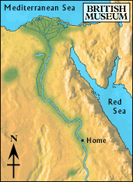

Desert

After walking through the marshy land for many hours, the boy reached the edge of the desert. The sun was bright.
The boy squinted his eyes to see where he was going. The girl in the village had told him that one path to the mines passed by a lake, and the other went straight through the desert.
Should he go towards the lake, or directly to the mines?